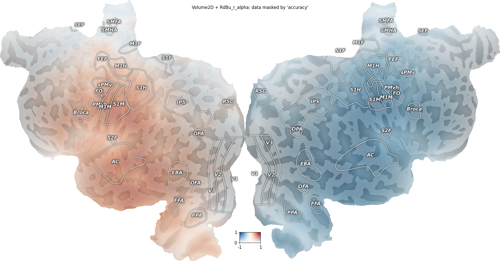
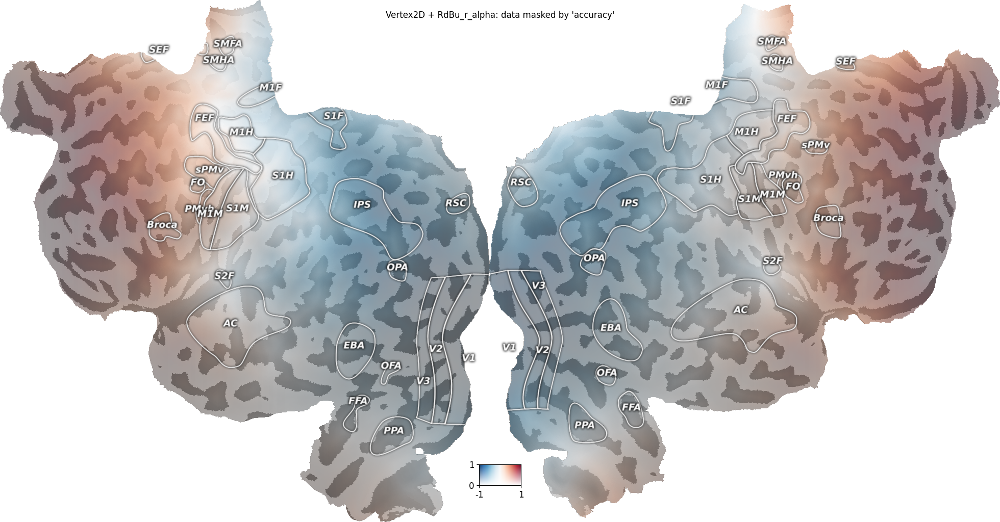
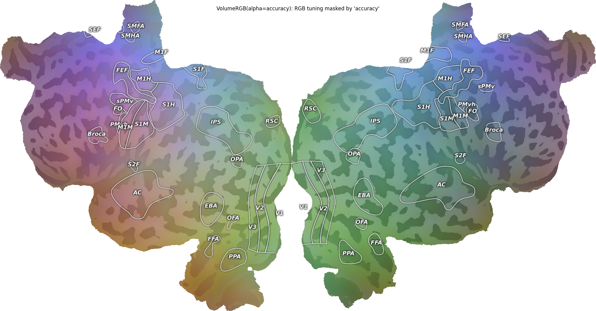
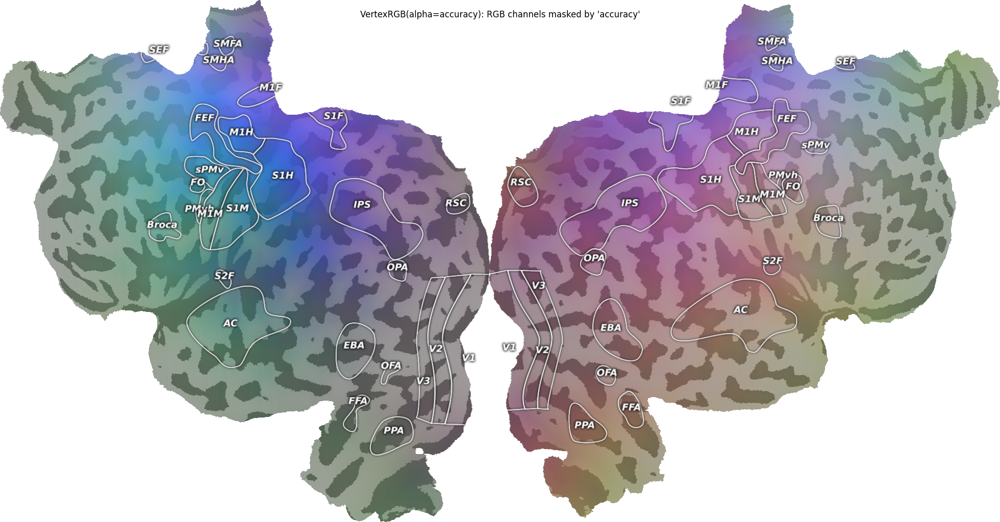

Note
Go to the end to download the full example code.
Plot Data with Alpha Values¶
It is often useful to plot a primary map (the “data” you are interested in) masked or attenuated by a secondary map (a “confidence” or “weight” map). For example, an encoding model’s tuning maps are interpretable where the model fits well, so one could plot tuning maps with opacity proportional to the per-voxel/per-vertex prediction accuracy. Voxels/vertices where the model fits poorly fade into the gray curvature underlay; voxels/vertices where the model fits well are fully opaque.
pycortex supports two patterns for this:
Scalar data with an alpha map – use
Volume2D/Vertex2Dwith a 2D colormap whose second axis encodes alpha (the colormap LUT itself goes from transparent to opaque alongdim2). No extra arithmetic is needed; the alpha channel is composited correctly by both the matplotlib (quickshow) and the WebGL renderers.RGB data with an alpha map – pass
alpha=directly toVolumeRGB/VertexRGB. The alpha can be any per-voxel/per-vertex array (or aVolume/Vertex) in[0, 1].
Below, we illustrate both patterns with a synthetic “model accuracy” mask – a 3D Gaussian bump for the volume case and a vertex-distance falloff for the surface case – so cortex near the bump centre stays opaque while the periphery fades into the curvature.
import cortex
import cortex.polyutils
import numpy as np
import matplotlib.pyplot as plt
subject = "S1"
xfm = "fullhead"
Synthesize the data and alpha maps¶
All four patterns below reuse the same synthetic inputs, so we set
everything up once here and only show the plotting call in each
pattern’s cell. In a real analysis these would come from your model
fits (e.g. data = regression coefficients, accuracy =
cross-validated prediction r^2).
# --- Volumetric data + alpha -------------------------------------------------
# Signed gradient across the brain stands in for a regression coefficient
# or tuning preference.
zz, yy, xx = np.mgrid[0:31, 0:100, 0:100]
data_vol = (xx - 50) / 50.0 # range ~ [-1, 1]
# A 3D Gaussian bump centered in the volume stands in for a per-voxel
# model accuracy / prediction r in [0, 1].
center = np.array([15, 50, 50])
sigma = 25.0
dist2 = (zz - center[0]) ** 2 + (yy - center[1]) ** 2 + (xx - center[2]) ** 2
accuracy_vol = np.exp(-dist2 / (2 * sigma**2)) # in [0, 1]
# RGB volumetric channels: anatomical x/y/z normalized to [0, 1]. Three
# smoothly-varying volumetric channels stand in for, e.g., three latent
# RGB tuning axes from a model.
red_vol = np.clip(xx / 99.0, 0, 1)
green_vol = np.clip(yy / 99.0, 0, 1)
blue_vol = np.clip(zz / 30.0, 0, 1)
# --- Surface (vertex) data + alpha -------------------------------------------
# Encode by *spatial coordinate*, not vertex index: vertex indices on the
# cortical surface are not arranged by spatial neighborhood, so a
# vertex-index ramp would render as visual noise.
surfs = [cortex.polyutils.Surface(*d) for d in cortex.db.get_surf(subject, "fiducial")]
num_verts = [s.pts.shape[0] for s in surfs]
total_verts = sum(num_verts)
pts = np.vstack([surfs[0].pts, surfs[1].pts]) # (total_verts, 3)
# Scalar surface data: anterior-posterior gradient (anatomical y),
# centered at zero so a diverging colormap reads naturally.
y_centered = pts[:, 1] - pts[:, 1].mean()
data_vtx = y_centered / np.abs(y_centered).max() # in [-1, 1]
# RGB surface channels: anatomical x/y/z normalized to [0, 1].
xyz_norm = (pts - pts.min(axis=0)) / (pts.max(axis=0) - pts.min(axis=0))
# Surface alpha: a soft bump centered at a particular vertex in each hemi.
def _bump(surf, seed, sigma):
d = np.linalg.norm(surf.pts - surf.pts[seed], axis=1)
return np.exp(-(d**2) / (2 * sigma**2))
accuracy_vtx = np.hstack(
[
_bump(surfs[0], num_verts[0] // 2, sigma=40.0),
_bump(surfs[1], num_verts[1] // 2, sigma=40.0),
]
)
Pattern 1a: scalar Volume + alpha via Volume2D + 2D alpha colormap¶
The 2D colormap "RdBu_r_alpha" maps (data, alpha) -> RGBA: along
the first axis, blue-white-red diverging; along the second axis,
transparent-to-opaque. So passing the data as dim1 and the accuracy
as dim2 yields exactly “diverging colormap, opacity = accuracy”.
Other 2D alpha colormaps shipped with pycortex include "fire_alpha"
(sequential, perceptually uniform), "PU_RdBu_covar_alpha" (diverging,
perceptually uniform), "plasma_alpha", and "autumn_alpha".
v2d = cortex.Volume2D(
data_vol,
accuracy_vol,
subject,
xfm,
cmap="RdBu_r_alpha",
vmin=-1,
vmax=1, # range for the data (dim1)
vmin2=0,
vmax2=1, # range for the alpha (dim2)
)
cortex.quickshow(v2d, with_colorbar=True, with_curvature=True)
plt.suptitle("Volume2D + RdBu_r_alpha: data masked by 'accuracy'")
plt.show()

Generating curvature surface info...
Pattern 1b: scalar Vertex + alpha via Vertex2D + 2D alpha colormap¶
Same idea on the surface.
vtx2d = cortex.Vertex2D(
data_vtx,
accuracy_vtx,
subject,
cmap="RdBu_r_alpha",
vmin=-1,
vmax=1,
vmin2=0,
vmax2=1,
)
cortex.quickshow(vtx2d, with_colorbar=True, with_curvature=True)
plt.suptitle("Vertex2D + RdBu_r_alpha: data masked by 'accuracy'")
plt.show()

Pattern 2a: RGB Volume + alpha via VolumeRGB(alpha=…)¶
When the “data” is itself three independent channels, use
VolumeRGB and pass the accuracy as the alpha= argument.
red = cortex.Volume(red_vol, subject, xfm, vmin=0, vmax=1)
green = cortex.Volume(green_vol, subject, xfm, vmin=0, vmax=1)
blue = cortex.Volume(blue_vol, subject, xfm, vmin=0, vmax=1)
alpha_vol = cortex.Volume(accuracy_vol, subject, xfm, vmin=0, vmax=1)
vrgb = cortex.VolumeRGB(red, green, blue, subject, alpha=alpha_vol)
cortex.quickshow(vrgb, with_colorbar=False, with_curvature=True)
plt.suptitle("VolumeRGB(alpha=accuracy): RGB tuning masked by 'accuracy'")
plt.show()

Pattern 2b: RGB Vertex + alpha via VertexRGB(alpha=…)¶
Same idea on the surface.
red_v = cortex.Vertex(xyz_norm[:, 0], subject, vmin=0, vmax=1)
green_v = cortex.Vertex(xyz_norm[:, 1], subject, vmin=0, vmax=1)
blue_v = cortex.Vertex(xyz_norm[:, 2], subject, vmin=0, vmax=1)
alpha_v = cortex.Vertex(accuracy_vtx, subject, vmin=0, vmax=1)
vrgb_vtx = cortex.VertexRGB(red_v, green_v, blue_v, subject, alpha=alpha_v)
cortex.quickshow(vrgb_vtx, with_colorbar=False, with_curvature=True)
plt.suptitle("VertexRGB(alpha=accuracy): RGB channels masked by 'accuracy'")
plt.show()

Notes¶
Both patterns produce the same composite formula at the pixel level:
out = alpha * data + (1 - alpha) * curvature_underlay. Choose based on what the “data” is: scalar (use Pattern 1) or RGB (use Pattern 2).The same objects work in the WebGL viewer:
cortex.webgl.show(v2d)etc.; opacity is honored identically.The deprecated
Vertex.blend_curvature(alpha)helper produced a pre-blendedVertexRGBthat lostcmap/vmin/vmaxeditability. The Pattern 1Vertex2Droute above is the recommended replacement: it keeps the colormap parameters editable on the resulting object and renders identically.
Total running time of the script: (0 minutes 10.614 seconds)